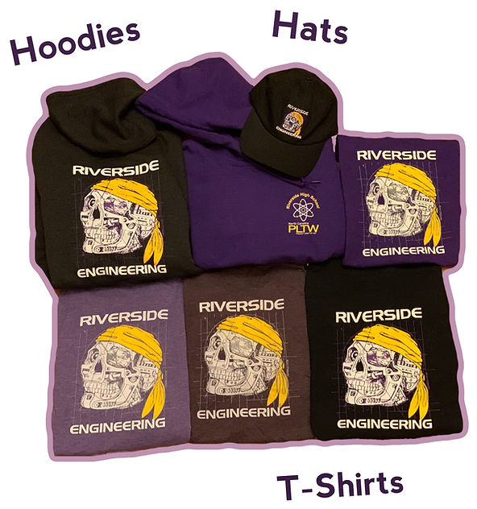

Fundraising
REPAC raises funds to directly support the engineering program at Riverside High School. Every dollar goes toward equipment, tools, competition fees, and student experiences.
Spirit Wear
Show your Riverside Engineering pride! REPAC sells spirit wear including t-shirts, hoodies, and other items featuring the engineering program logo. Spirit wear sales are one of our primary fundraisers.
Browse and purchase spirit wear through our online store:

How Funds Are Used
Equipment & Tools
3D printers, CNC machines, hand tools, electronics kits, and other equipment for the engineering labs.
Competition Support
TSA registration fees, travel expenses, materials for competition projects, and team supplies.
Classroom Supplies
Consumable materials, software licenses, printing, and other day-to-day classroom needs.
Student Events
Social events, senior recognition, freshman welcome, and community-building activities.
Make a Donation
As a 501(c)(3) nonprofit, all donations to REPAC are tax-deductible. Your generosity directly impacts our students' education and experiences.
By Check
Make checks payable to REPAC and write Donation on the memo line. Bring to any REPAC meeting or event, or mail to Riverside High School.
Corporate Matching & Sponsorship
Many employers offer matching gift programs that can double your donation. Check with your HR department to see if your company matches charitable contributions. Corporate sponsorships are also welcome.
Contact us at a REPAC meeting or event to learn more about sponsorship opportunities.
Questions or Comments?
Email us at REPACrhs@gmail.com